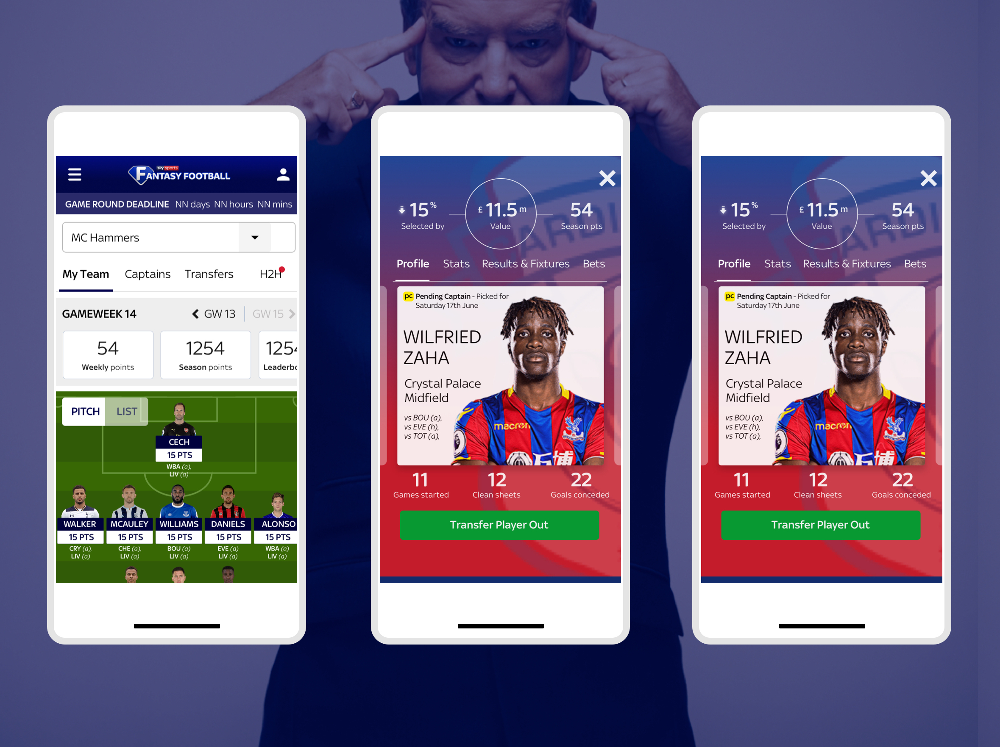
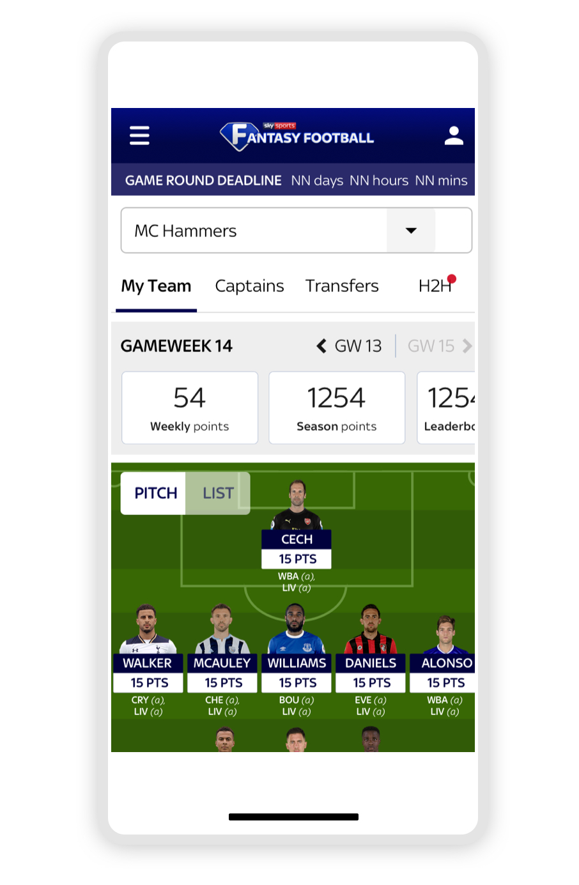
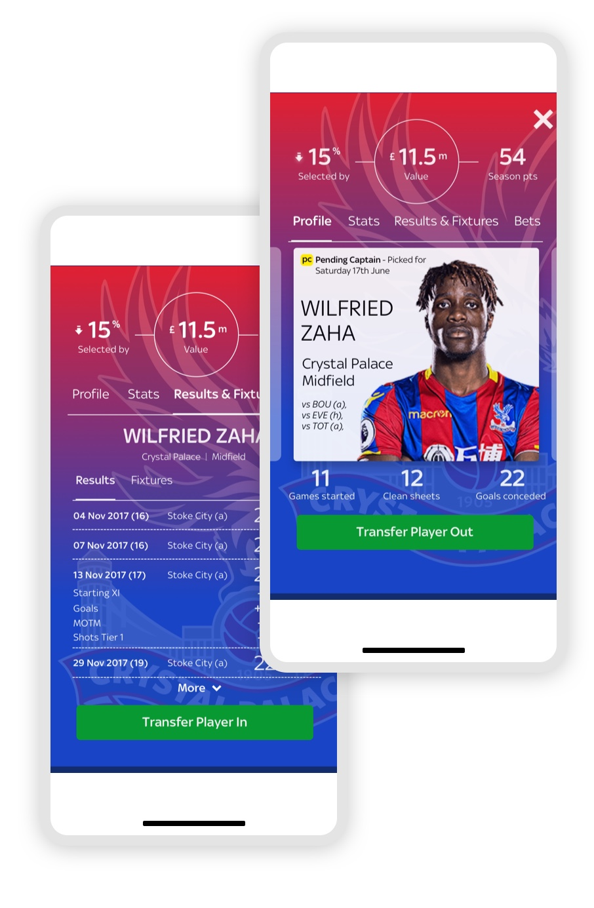

Case Study: Sky Sports Fantasy Football. Creative UI Design for the popular game.
Delivery
Facilitate workshops, prototype, website and app, presentation to stakeholders
Tools
Multi-disciplinary team, agile methods, user research, focus groups, Marvel, Sketch, HTML, SASS, plenty of post its.
Visit

As a part of Sky Sports family, Fantasy Football is one of the leading games in the country.
With users returning daily to change their team, check scores, compete against friends and win the overall prize - manager of the year, the potential is huge.
Collaborating with users, stakeholders and agile teams, I took the lead on user experience, site structure and UI design to help deliver a responsive, mobile-friendly product that users would love and Sky Sports could promote easily.
Process
Research
During the research process, we found that many users didnt enjoy the previous years version of Sky Sports' version of Fantasy Football compared to other ones, customers prefering the speed and ease, and wealth of stats at their finger tips. This showcased many pain point throughout a handful of user journeys, mostly surrounding ease of use.
With that in mind, I worked collaboratively with stakeholders to define exactly what the user wanted (and needed) to give them the satisfaction that they are seeking for. We found this by running a 'Design Sprint', highlighting all User feedback, helping stakeholders underpin user needs, obstacles and general behaviour. From this process, we established several things that needed to be changed, run through User Research, whilst finding new features to add to the product.
As expected, the outcome from the Sprint was a series of lo-fi sketches, which were produced to optimise user journeys, and later evolving them into more detailed wireframes, flows and prototypes.

User Testing
To validate journeys and general direction of the prototypes (and the Design Sprint), regular sessions with users were set up (5 users for every 2 week design sprint), limited journeys were carried out with users of the Sky Sports app and also competitors. Feedback allowed us to quantify any assumptions made around journeys and features. In turn, this informed priorities for Agile design and development sprints.

Design
Following on from user feedback sessions, the design needed to support the findings, as well as the strong Sky Sports branding, pattern libraries were created in Sketch, which then allowed formation of UI designs quickly and easily, continually tested and shared with developers via Zeplin.
Development was handled by an "outside" agency, designs were shared via Slack, MarvelApp, and initially inviting all the development team for Design Workshops (allowing everyone to make design decisions etc).
Mobile App
Mobile App
Web (Desktop)